P0_CLEARLY_BETTER_THAN_ZERO
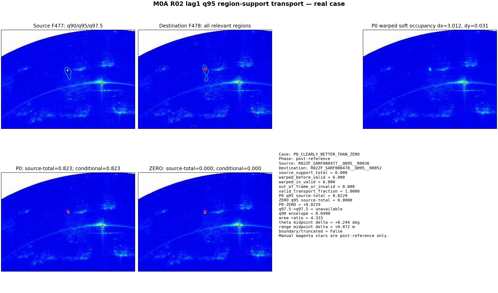
R02ZF_SARF000477__R02ZF_SARF000477__Q095__R0036__TO__R02ZF_SARF000478__Q095__R0052
Scientific role: M0 SAR-temporal prerequisite. Final state: M0A_REGION_SUPPORT_TRANSPORT_WITH_P0_GAIN.
This report does not establish Optical–SAR motion consistency, runtime identity, ambiguity resolution, or final SAR localization.
R02 adjacent lag1 comparable pairs
P0 supported median q95 source-total retention
ZERO supported median q95 source-total retention
Median P0 − ZERO retention
P0 supported win rate vs reference-unsupported matched alternatives
Supported destination rank median
Source-total retention and conditional-valid retention remain separate. Median valid transport fraction is 1.0000. P0 is better than ZERO on 0.833 of supported edges, tied on 0.000, and worse on 0.167. No parameter was changed to make P0 win.
Median q97.5→q97.5 retention: 0.900. Median q95 minus core: -0.012.
Median q90 envelope retention: 0.912. Median q90 minus q95: -0.004.
The experiment contains no raw optical angular dynamics and does not compare Δtheta_optical with Δtheta_SAR. It only tests one-step SAR image-domain region-support continuity and candidate ordering. The complete matrix is not pruned or assigned, so no unique dynamic identity or ambiguity-reduction count exists.
| Case | Frozen edge |
|---|---|
| P0_CLEARLY_BETTER_THAN_ZERO | R02ZF_SARF000477__R02ZF_SARF000477__Q095__R0036__TO__R02ZF_SARF000478__Q095__R0052 |
| P0_APPROX_EQUAL_ZERO | R02ZF_SARF000472__R02ZF_SARF000472__Q095__R0001__TO__R02ZF_SARF000473__Q095__R0002 |
| ZERO_BETTER_THAN_P0 | R02ZF_SARF000491__R02ZF_SARF000491__Q095__R0051__TO__R02ZF_SARF000492__Q095__R0032 |
| SPLIT_LIKE | R02ZF_SARF000478__R02ZF_SARF000478__Q095__R0004__TO__R02ZF_SARF000479__Q095__R0002 |
| BOUNDARY_OR_TRUNCATED | R02ZF_SARF000482__R02ZF_SARF000482__Q095__R0043__TO__R02ZF_SARF000483__Q095__R0029 |
| REFERENCE_SUPPORTED_RANKS_WELL | R02ZF_SARF000472__R02ZF_SARF000472__Q095__R0002__TO__R02ZF_SARF000473__Q095__R0002 |
| REFERENCE_SUPPORTED_RANKS_POORLY | R02ZF_SARF000472__R02ZF_SARF000472__Q095__R0006__TO__R02ZF_SARF000473__Q095__R0009 |
| MATCHED_ALTERNATIVE_DECEPTIVELY_STRONG | R02ZF_SARF000472__R02ZF_SARF000472__Q095__R0006__TO__R02ZF_SARF000473__Q095__R0009 |
Magenta stars appear only in post-reference versions. The corresponding nine pre-reference images remain under figures/pre_reference.

R02ZF_SARF000477__R02ZF_SARF000477__Q095__R0036__TO__R02ZF_SARF000478__Q095__R0052
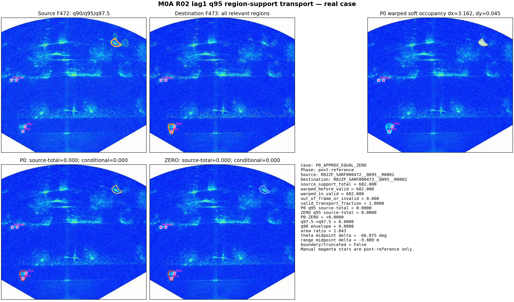
R02ZF_SARF000472__R02ZF_SARF000472__Q095__R0001__TO__R02ZF_SARF000473__Q095__R0002
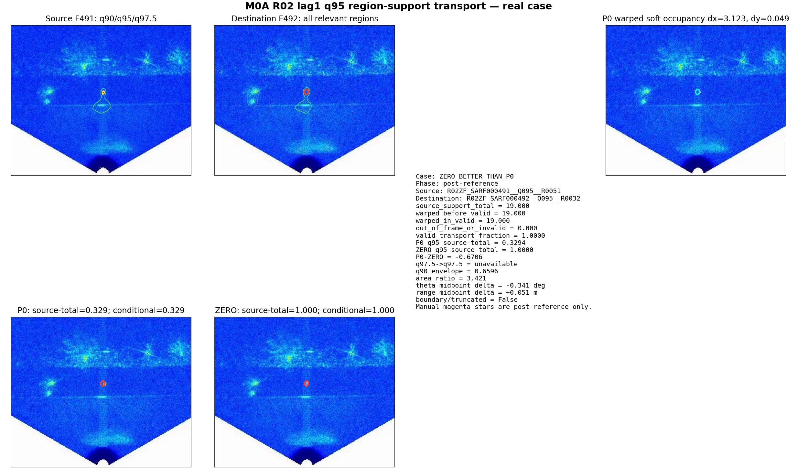
R02ZF_SARF000491__R02ZF_SARF000491__Q095__R0051__TO__R02ZF_SARF000492__Q095__R0032
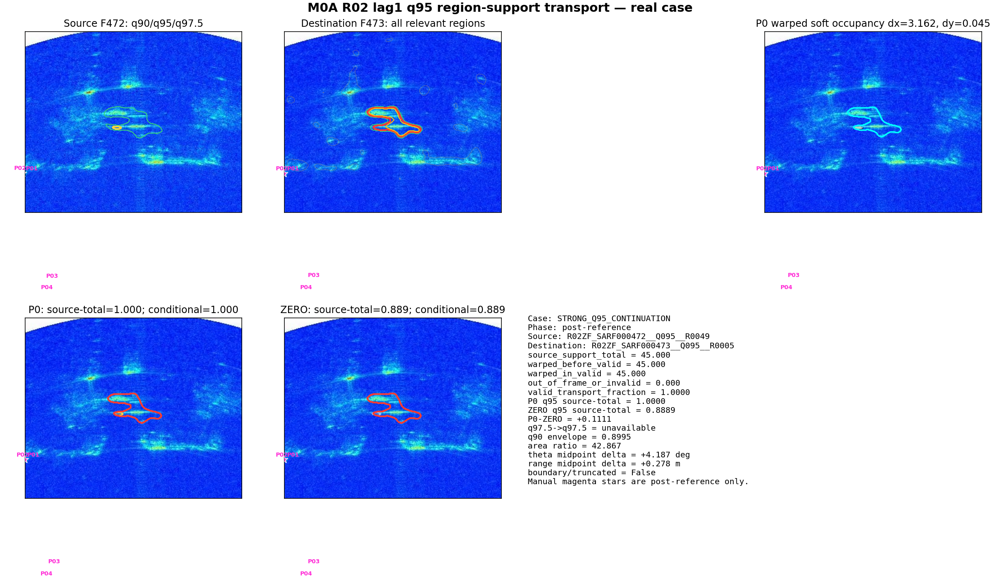
R02ZF_SARF000472__R02ZF_SARF000472__Q095__R0049__TO__R02ZF_SARF000473__Q095__R0005
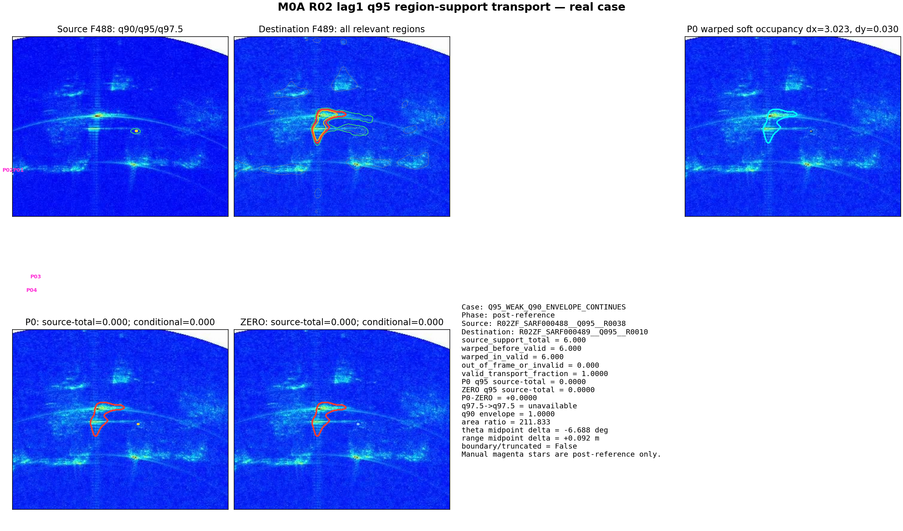
R02ZF_SARF000488__R02ZF_SARF000488__Q095__R0038__TO__R02ZF_SARF000489__Q095__R0010
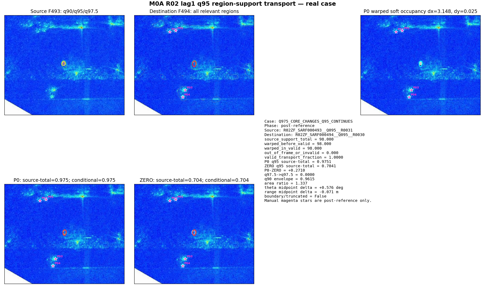
R02ZF_SARF000493__R02ZF_SARF000493__Q095__R0031__TO__R02ZF_SARF000494__Q095__R0030
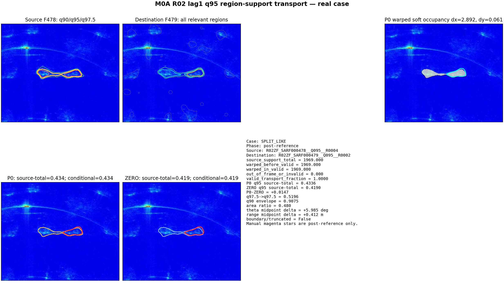
R02ZF_SARF000478__R02ZF_SARF000478__Q095__R0004__TO__R02ZF_SARF000479__Q095__R0002
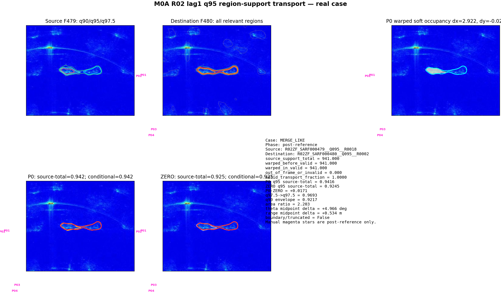
R02ZF_SARF000479__R02ZF_SARF000479__Q095__R0018__TO__R02ZF_SARF000480__Q095__R0002
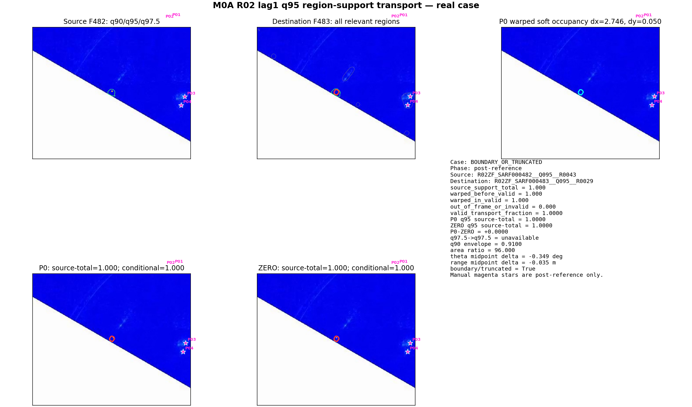
R02ZF_SARF000482__R02ZF_SARF000482__Q095__R0043__TO__R02ZF_SARF000483__Q095__R0029
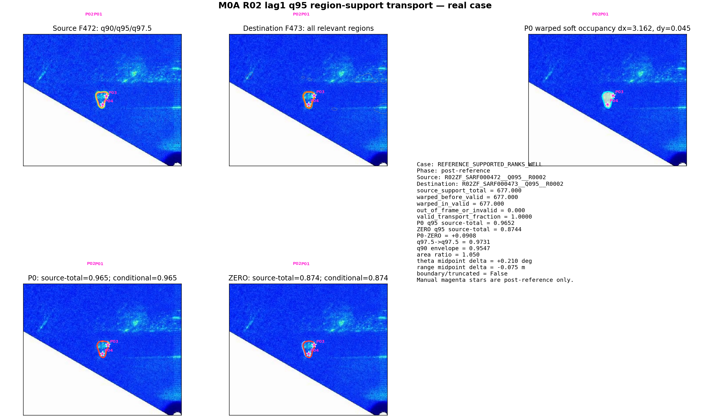
R02ZF_SARF000472__R02ZF_SARF000472__Q095__R0002__TO__R02ZF_SARF000473__Q095__R0002
R02ZF_SARF000472__R02ZF_SARF000472__Q095__R0006__TO__R02ZF_SARF000473__Q095__R0009
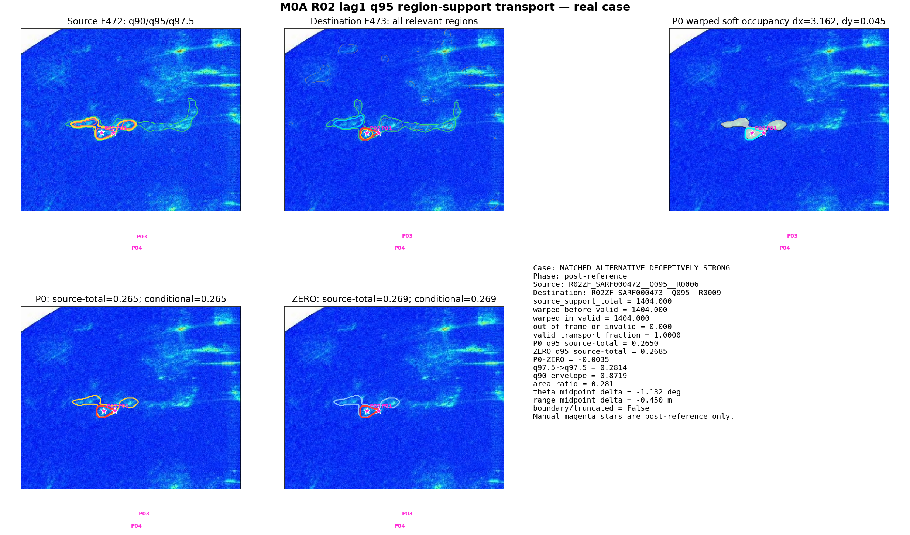
R02ZF_SARF000472__R02ZF_SARF000472__Q095__R0006__TO__R02ZF_SARF000473__Q095__R0009
Reference-supported explanation rows: 12; unique P0 target transitions: 6.